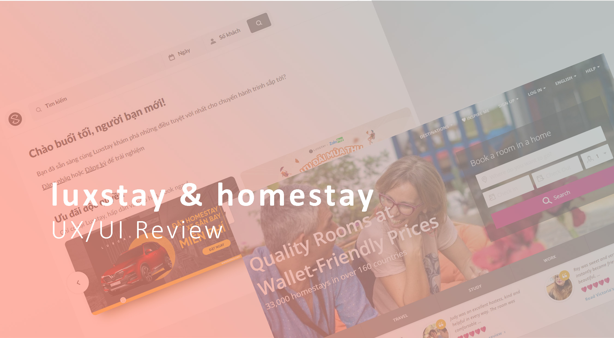
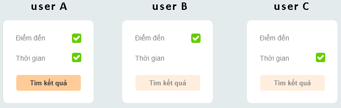
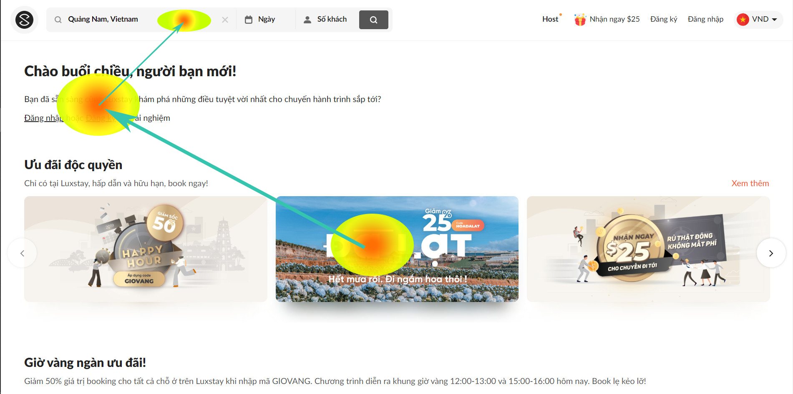
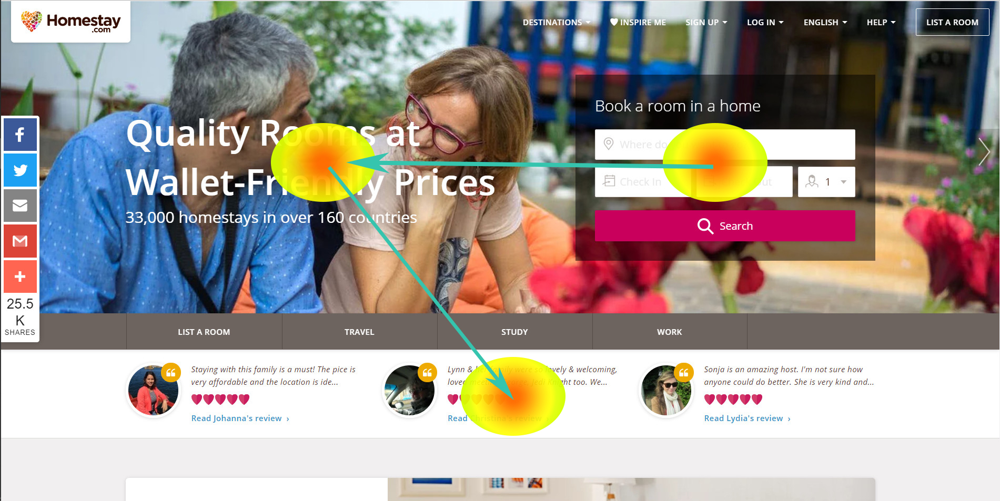
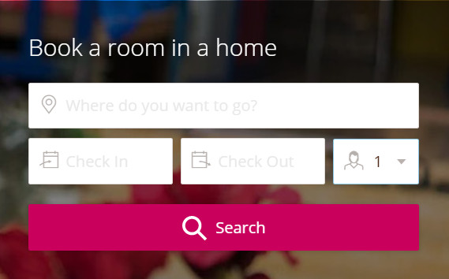
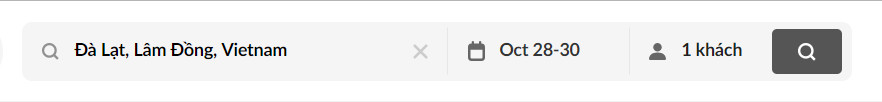
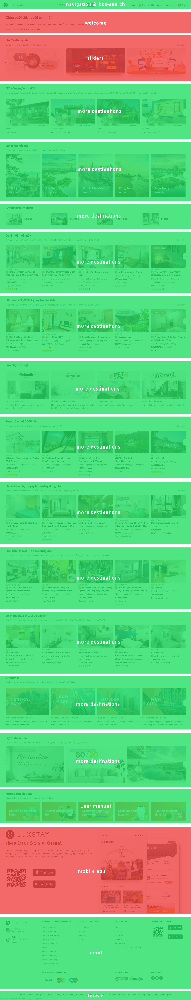
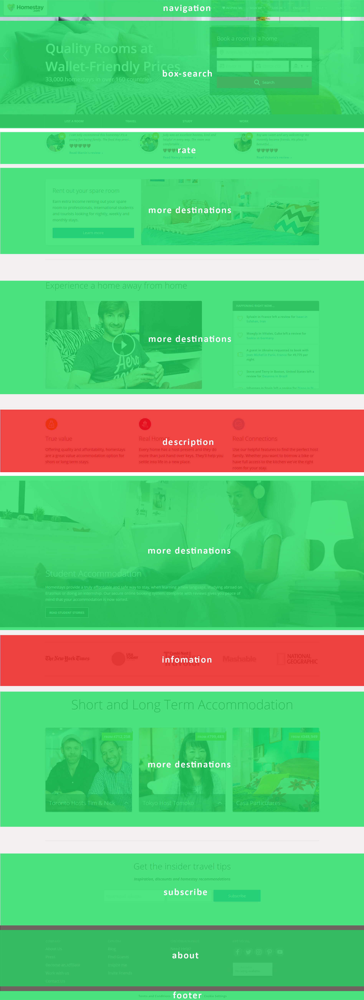

Phân tích đánh giá thiết kế UX/UI trong lĩnh vực OTA (Online Travel Agent)

Trong thời đại công nghệ thông tin phát triển bùng nổ và dần chi phối phần lớn cuộc sống con người như hiện nay,
ứng dụng công nghệ và kinh tế chia sẻ trở thành một xu hướng chiến lược trong kinh doanh. Uber hay Grab là những
minh chứng dễ hiểu. Không những vậy, xu hướng này còn dần được áp dụng phổ biến trong ngành Khách sạn và dịch vụ
Homestay. Đây cũng là tiền đề để các website về đặt phòng online ra đời. Đây là mô hình kết nối người cần thuê
nhà, thuê phòng nghỉ với những người có phòng cho thuê qua các website hoặc ứng dụng di động.
Ở bài viết này, chúng ta sẽ phân tích, đánh giá về thiết kế của 2 trang web luxstay.com và
homestay.com. Đây là 2 trang web về đặt lịch phòng homestay, chúng ta sẽ phân tích xem với cùng một lĩnh
vực, trang web giữa Việt Nam và thế giới có những điểm gì khác nhau. Các kết luận, đánh giá trong bài viết này
là theo góc nhìn, trải nghiệm thiết kế là cá nhân.
UX (User Experiance)
Rõ ràng, sản phẩm thuộc lĩnh vực OTA (Online Travel Agent) là một dạng sản phẩm resource booking,
và vì thế chúng ta quan tâm nhất 2 thứ là “Đặt lịch” và “Quản lý đặt lịch”, ở bài viết này
chúng ta tạm thời chỉ xét đến đặt lịch. Tuy nhiên, có nhiều ngữ cảnh khác nhau để tiếp cận sản
phẩm, vì thế để công bằng, chúng ta sẽ đưa ra 3 kịch bản người dùng khi bắt đầu với 2 trang web này, và
chỉ xét đến tập khách hàng tìm phòng/địa điểm phòng.
• Ngữ cảnh 1: người dùng biết điểm đến và thời gian của chuyến đi
• Ngữ cảnh 2: người dùng biết điểm đến nhưng chưa xác định thời gian.
• Ngữ cảnh 3: người dùng biết thời gian những chưa biết điểm đến cần đi

Trang chủ
Mục tiêu khi người dùng truy cập vào trang web đó là tìm cho mình một gợi ý và thực hiện việc
đặt lịch - tương tự người đi mua sắm là đi tìm một item phù hợp theo mục tiêu ban đầu khi bước
vào store.

Trang chủ hiện tại của luxstay.com
Ngay ở [Trang chủ] của Luxstay.com, điểm nhấn đầu tiên, người dùng dành sự tập trung
cho slider/banner, tiếp đến mới là phần [Tìm kiếm]. Sự dẫn lối này tạo cho người dùng thiên
hướng về tìm hiểu sản phẩm hơn thay vì sử dụng sản phẩm.

Trang chủ hiện tại của homestay.com
Mặt khác, khi vào [Trang chủ] của homestay.com, người dùng sẽ chú ý đến ô [Tìm kiếm]
đầu tiên, tiếp đến là mục đánh giá, v.v . Điều này trực tiếp dẫn người dùng đến mục đích là sử
dụng sản phẩm để tìm kiếm.
Chức năng tìm kiếm, đặt lịch
Cả 2 trang web đều tập trung vào đối tượng khách hàng chính là những người tìm địa điểm để
thuê phòng.
Về giao diện của ô [Tìm kiếm]:

Ô [Tìm kiếm] hiện tại ở trang chủ homestay.comÔ [Tìm kiếm] hiện tại ở trang kết quả tìm kiếm của homestay.com
Ô [Tìm kiếm] trên trang [kết quả] của homestay, các ô text input bây giờ đang chứa lựa
chọn tìm kiếm, như ảnh trên người dùng bây giờ không rõ ô (28 Oct 2019) và (30 Oct 2019) là
nhận phòng hay trả phòng. Việc người dùng phải ghi nhớ hay click vào ô nhập để biết nó là gì
gây tốn thời gian, làm giảm hiệu quả “tiến trình giao dịch”.
Bất cập tiếp theo là ô [Tìm kiếm] ở [Trang chủ] cũng không thể tìm kiếm khi chưa nhập địa điểm
muốn đến.
Với trang luxstay, ô [Tìm kiếm] sử dụng Time range picker, người dùng sẽ không
cần phải xem ô nhập nào là nhận phòng, ô nào là trả phòng. Thuận tiện cho người sử dụng trong
việc thay đổi linh hoạt khi không phải ghi nhớ và click nhiều.
Ô [Tìm kiếm] hiện tại ở trang chủ của luxstay.com

Ô [Tìm kiếm] hiện tại ở trang kết quả tìm kiếm của luxstay.com
Kết luận: Như đã nêu ở trên, chúng ta đưa ra 3 ngữ cảnh người dùng, cho nên user flow
cần đáp ứng được cho cả 3 tình huống trên. Thực tế là ở ngữ cảnh 1, cho dù người dùng biết
điểm đến của mình và khoảng thời gian để đi, thì sau khi tìm kiếm các kết quả, 2 yếu tố trên
hoàn toàn có thể thay đổi do: hết phòng, thời gian phòng trống, thay đổi tiêu chí chọn phòng,…
Vì thế người dùng hoàn toàn có thể từ ngữ cảnh 1 chuyển sang ngữ cảnh 2 hoặc 3, do đo tính
năng [Tìm kiếm] cần linh hoạt ở mọi nơi, “trong suốt” trong mọi quá trình của người dùng. Từ
đó, có thể thấy trang luxstay làm tốt hơn trang homestay ở điểm này.
CẤU TRÚC THÔNG TIN
Dưới góc nhìn cảm quan giao diện, trang chủ của luxstay là sự kết hợp các thành phần của một trang
landing page, vừa kết hợp của một page sản phẩm. Điều này lý giải được vì sao ở [Trang chủ] có
slider với mục đích quảng cáo, các thông tin với mục tiêu thu hút người dùng mới mang nhiều mục đích kết
hợp giữa quảng bá và cung cấp sản phẩm kết hợp với bên thứ ba.

Còn với homestay, nội dung [Trang chủ] tập trung đưa ra các tính năng của sản phẩm chính.

[Trang chủ] được phân chia thành nhiều card/block, tùy vào mục đích sử dụng khác nhau mà vị trí và cách
thể hiện khác nhau. Tuy nhiên, các phần người dùng thực sự cần ở đây là những card/block màu xanh lá cây.
Kết luận: Dưới góc độ thiết kế sản phẩm, [Trang chủ] luôn là nơi đưa ra những tính năng “hot” nhất
và là key của sản phẩm, các tính năng giá trị gia tăng sẽ ở vị trí tạo ra điểm nhấn thu hút và luôn bố trí
riêng biệt. Hạn chế trình bày hoặc đưa ra những tính năng gây sao lãng, làm vuột mất tầm nhìn của người
dùng khỏi thứ mà họ cần.
KẾT LUẬN CHUNG
Cả 2 trang web đều có những ưu và nhược điểm riêng đối với trải nghiệm người dùng. Rất khó để đánh giá
xem trải nghiệm trang web nào tốt hơn. Để xác định tính hiệu quả của 2 trang web cần kiểm thử theo vị
trí địa lý và các tiêu chí: số trải nghiệm người dùng, các con số tỷ lệ, v.v…